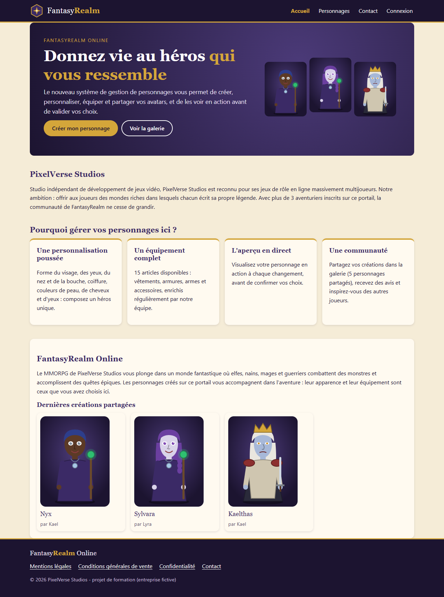
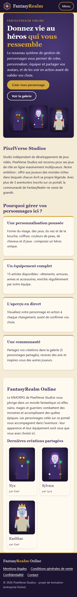
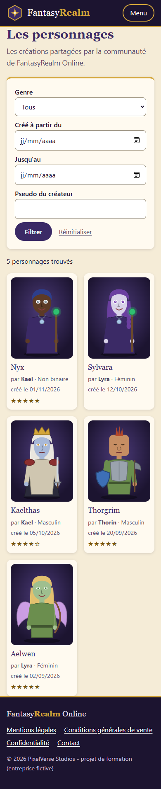
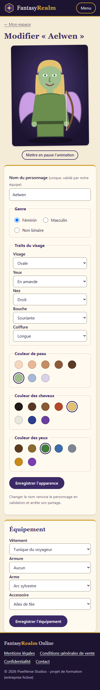

FantasyRealm Online
Charte graphique
Système de gestion de personnages - PixelVerse Studios
Palette, typographies, composants, wireframes et maquettes
FantasyRealm Online
Système de gestion de personnages - PixelVerse Studios
Palette, typographies, composants, wireframes et maquettes
L'univers de FantasyRealm Online est un monde de fantasy médiévale. L'interface évoque un grimoire : un fond couleur parchemin, des titres à empattements, un violet profond pour la nuit et la magie, et un or réservé aux accents (liens actifs, cadres, étoiles). L'ambiance reste sobre pour que les avatars des joueurs soient les vrais héros de chaque page.
Contraintes respectées : contraste minimal de 4,5:1 pour tout texte (RGAA, critère 3.2), interface utilisable de 320 px à grand écran (conception mobile first), et éco-conception (aucun framework CSS, polices système, images vectorielles SVG générées par le serveur).
Un hexagone violet bordé d'or entourant une étoile à quatre branches : la rose des vents d'un monde à explorer. Le logo est un fichier SVG de moins d'1 ko, net à toutes les tailles, également utilisé comme favicon.
Il est toujours accompagné du nom « FantasyRealm », « Realm » étant écrit en or.
Nuit
#1C1430
En-tête, pied, texte
Violet
#3B2A66
Couleur principale, boutons, titres
Or
#D4A63A
Accents sur fond sombre
Or foncé
#7A5810
Accents sur fond clair
Parchemin
#F5ECD7
Fond de page
Vélin
#FFFAF0
Fond des cartes
Rubis
#9E2F2F
Erreurs, suppression
Émeraude
#2B6446
Succès
| Texte | Fond | Rapport | Niveau |
|---|---|---|---|
| Nuit #1C1430 | Parchemin #F5ECD7 | 15,0:1 | AAA |
| Blanc | Violet #3B2A66 | 12,3:1 | AAA |
| Or #D4A63A | Nuit #1C1430 | 7,8:1 | AAA |
| Or foncé #7A5810 | Vélin #FFFAF0 | 6,2:1 | AA |
| Gris #564B69 | Parchemin #F5ECD7 | 6,9:1 | AA |
| Blanc | Rubis #9E2F2F | 7,2:1 | AAA |
L'or #D4A63A n'est jamais utilisé pour du texte sur fond clair (contraste insuffisant) : on utilise alors l'or foncé. Valeurs calculées avec la formule de luminance relative des WCAG 2.1 (or sur parchemin : 1,9:1, d'où cette règle).
Georgia
Titres. Police à empattements, élégante, évoquant les livres anciens. Repli : Palatino Linotype, Book Antiqua, serif.
Police système
Textes et formulaires : system-ui (Segoe UI sous Windows, San Francisco sous macOS, Roboto sous Android).
Très lisible et déjà installée : aucun fichier de police à télécharger (éco-conception, rapidité).
| Élément | Police | Taille mobile | Taille bureau |
|---|---|---|---|
| Titre de page (h1) | Georgia | 1,9 rem | 2,3 rem |
| Titre de section (h2) | Georgia | 1,4 rem | 1,4 rem |
| Texte courant | Système | 1 rem (16 px) | 1 rem (16 px) |
| Aide, mentions | Système | 0,9 rem | 0,9 rem |
Bouton principal Secondaire Supprimer
Maquettes basse fidélité (structure et hiérarchie, sans couleur) des trois écrans principaux, en version bureau et mobile.
Maquettes haute fidélité des trois mêmes écrans. Elles correspondent à l'application réalisée (captures de la version finale, données de démonstration).





